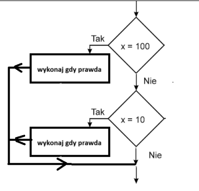
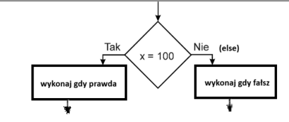

1) Instrukcja wyboru → składnia teoretyczna.
if (warunek_logiczny1)
{
// instrukcje jeśli warunek_logiczny1 prawdziwy
}
if (warunek_logiczny2)
{
// instrukcje jeśli warunek_logiczny2 prawdziwy
}
2) Instrukcja wyboru → schemat blokowy.

3) Instrukcja alternatywy → składnia teoretyczna.
if (warunek_logiczny)
{
// instrukcje jeśli warunek_logiczny prawdziwy
}
else
{
// instrukcje jeśli warunek_logiczny fałszywy
}
4) Instrukcja alternatywy → schemat blokowy.

5) Operatory porównania.
Operator | Opis | Przykład
== | jest równe | 2==3 wynik → fałsz
!= | nie jest równe | 2!=3 wynik → prawda
> | jest większe | 25>3 wynik → prawda
< | jest mniejsze | 2<3 wynik → prawda
>= | większe lub równe | 25>=3 wynik → prawda
<= | mniejsze lub równe | 2<=3 wynik → prawda
6) Uwaga do operatorów porównania.
Należy odróżnić:
== (dwa razy) → instrukcja **PORÓWNANIA**
= (jeden raz) → instrukcja **PRZYPISANIA** np. a=5;
7) Operatory logiczne.
Operator | Opis | Przykład
&& | i | x=3 y=4 (x < 9 && y > 2) wynik → prawda
|| | lub | x=3 y=4 (x==8 || y==6) wynik → fałsz
! | zaprzeczenie | x=3 y=4 !(x==y) wynik → prawda